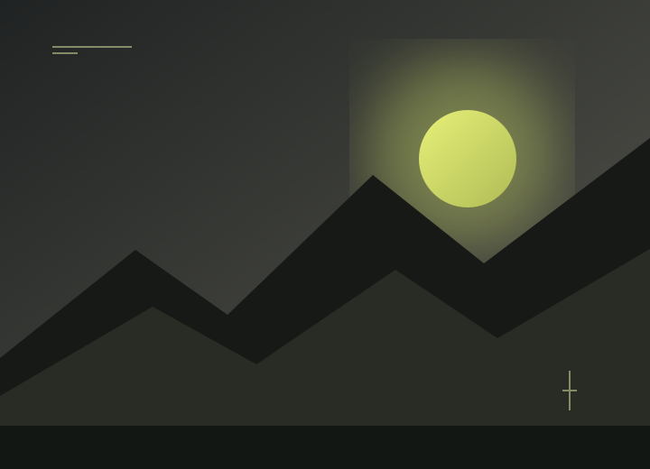
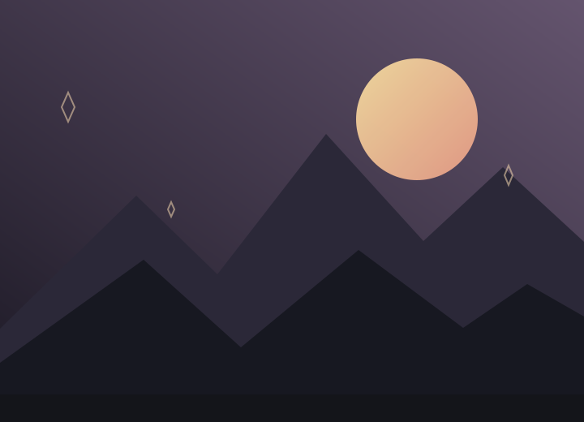
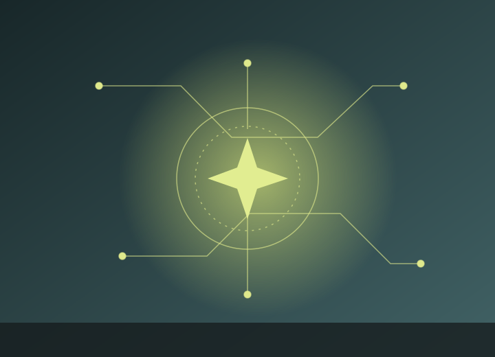
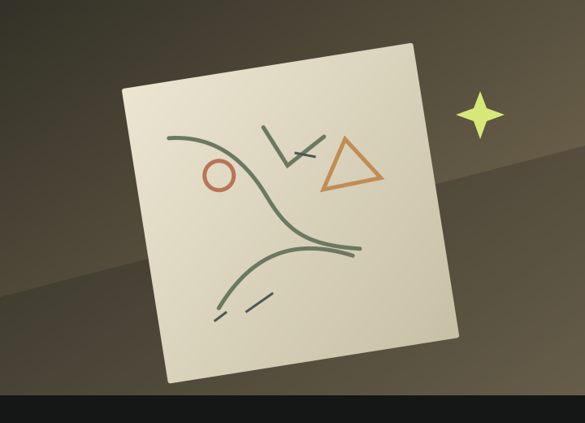

01 / PLAYOne moreround.
Games, then and now
I used to play competitively at a pro level. I still love the challenge, the creativity, and the people you meet along the way.
Set Aev0rix Cebu City, Philippines
An IT student, gamer, and creative thinker learning to turn big ideas into thoughtful work — one project, one coffee, and one step at a time.
01 — A little context
I’m Set — quiet at first, then probably making a joke once I’m comfortable. I’m imaginative, competitive, straightforward, and still figuring things out as I go.
I’ve lived independently for almost seven years. It has taught me that freedom and loneliness can sit side by side, and that patience, self-reliance, and a good friend matter more than I once knew. I try to meet each day with love and appreciate the people I can lean on.
Freedom, loyalty, discipline, kindness, and creativity matter to me. I enjoy meaningful experiences, new places and perspectives, and having the room to live life on my own terms.
When things get difficult, I think about the people who inspire me and the people who count on me. I want to keep growing into someone my friends can rely on, do some good where I can, and make my mum happy.
Good things happen when you
stay curious long enough.
02 — Things I work with
A few things I’ve explored. Nothing ranked, nothing inflated — just an honest snapshot of what belongs in your toolkit.
03 — Where I’m learning
Bachelor of Science in Information Technology
I’m working toward a career in project management while staying curious about investing and business.
04 — Outside the pixels
Anime, games, stories, and all the things that make me want to stay up for one more episode — or one more round.

01 / PLAYOne moreI used to play competitively at a pro level. I still love the challenge, the creativity, and the people you meet along the way.

02 / STORYWorlds withinCharacters with heart, big ideas about freedom, and stories I keep thinking about long after the credits.

03 / WONDERWhat'sA good cup, a new corner of the city, and a little room to think. Coffeeholic tendencies included.

04 / MAKEMake roomMusic, movies, sports, cooking, and the creative urge to try something new.
05 — Things made real
The best portfolios are honest. Add a project in scripts/content.js and it’ll show up here.
06 — Still unfolding
Not a straight line or a finished story. Just a few things that have shaped who I am, and where I’m heading.
Your milestones, studies, and big ideas will live here. Add them in scripts/content.js.
07 — Fictional worlds, real values
They’re fictional characters, not my own story. But the qualities they stand for give me something worth thinking about.
08 — A thought to carry
M - VIIFocus Through Pain
A reminder to keep showing up.
“I had strings, but now I’m free. There are no strings on me...”
09 — Your turn
For a project, a question, or an idea that could use another perspective — I’m always up for a thoughtful conversation.